☕ Modeling Your First Object
This is the moment you've been waiting for! Today, we're going to build a complete 3D object from start to finish. Not just any object—we're creating a coffee mug that you can actually use in renders, animations, or even 3D print. By the end of this lesson, you'll have transformed a simple cylinder into a beautiful, functional mug using all the techniques you've learned so far.
🎯 Learning Objectives
- Complete a full modeling workflow from primitive shape to finished object
- Apply edit mode techniques in a real-world modeling scenario
- Use reference thinking to plan and execute your model
- Master the extrude, loop cut, and scale tools in practical context
- Develop good modeling habits that will serve you for years
- Build confidence by completing your first real 3D model
⏱️ Estimated Time: 60-75 minutes
🎨 Project: A complete coffee mug with handle
In This Lesson
Why Start with a Coffee Mug?
You might be wondering—of all the things we could model in Blender, why a coffee mug? Well, let me tell you why this humble object is actually the perfect first modeling project for beginners.
💡 Think of it this way: A coffee mug is like learning to play "Twinkle, Twinkle, Little Star" on the piano. It's simple enough that you won't get overwhelmed, but it teaches you all the fundamental techniques you'll use for the rest of your 3D journey. Every professional 3D artist started with simple objects like this!
The Perfect Learning Object
A coffee mug combines several modeling challenges in one neat package:
🎓 What Makes a Coffee Mug Ideal
- Familiar shape: You see mugs every day, so you know what looks "right"
- Simple geometry: It starts from a cylinder—the most basic shape
- Multiple techniques: You'll use extrusion, loop cuts, scaling, and more
- Interior and exterior: You'll learn to create hollow objects
- Curved surfaces: The handle introduces organic modeling
- Real-world usefulness: You can use this in renders, games, or 3D printing
- Room for creativity: Make it tall, short, fancy, or simple—your choice!
What You'll Actually Learn
This isn't just about making a mug. While we're creating this object, you're actually learning fundamental skills that apply to everything you'll model in the future:
✅ Real Talk About Learning
Here's something important: Your first mug probably won't be perfect, and that's completely okay. Professional 3D artists didn't start by creating flawless models—they started exactly where you are right now. The difference between beginners and professionals isn't perfection; it's persistence. Every "mistake" you make while modeling this mug is actually teaching your brain how Blender works.
The Journey Ahead
We're going to build this mug step by step, and I'll explain why we're doing each step, not just what to click. Understanding the reasoning behind each decision will help you model anything in the future.
Think of me as your guide on a hiking trail. I'll point out interesting features along the way, warn you about tricky spots, and make sure you understand the landscape. By the time we reach the summit (a finished mug!), you'll be confident enough to hike other trails on your own.
Setting Up Your Workspace
Before we start modeling, let's make sure your workspace is set up for success. These small setup steps will make the whole process smoother.
✅ Quick Setup Checklist
- Delete the default cube: Select it (right-click) and press X, then Delete
- Check your units: We'll work in Blender units for now (no need to change anything)
- Position your view: Use the middle mouse to orbit until you have a clear view
- Make sure you're in Object Mode: Check the dropdown in the top-left
- Have your navigation shortcuts ready: Remember that middle-mouse rotates, shift+middle-mouse pans
Great! Now we're ready to start actually modeling. Take a deep breath—you're about to create your first real 3D object!
Creating the Mug Body
Alright, here we go! This is where theory meets practice. We're going to transform a simple cylinder into the body of our coffee mug. Follow along step by step, and don't worry if something doesn't look perfect right away—remember our "good enough for now" principle!
Adding the Cylinder
Every mug starts with a cylinder. Think about it—the basic shape of a mug is cylindrical. Sure, some mugs have fancy shapes, but even those start from this simple beginning.
📝 Step-by-Step: Adding a Cylinder
- Make sure your 3D cursor is at the center: Press
Shift+S, then choose "Cursor to World Origin" - Add a cylinder: Press
Shift+Ato bring up the Add menu - Navigate the menu: Mesh → Cylinder
- You should see a cylinder appear! It's selected (outlined in orange)
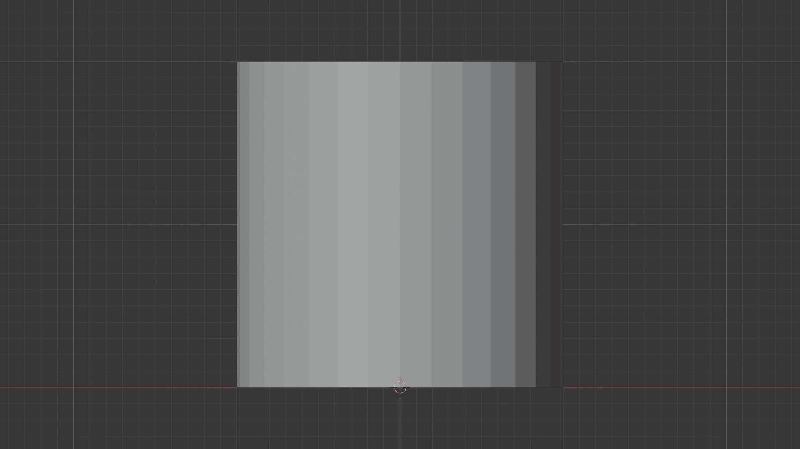
💡 Why this location? Starting at the world origin (the center of your scene) makes it easier to work with transforms and keeps everything organized. It's like starting a puzzle at the corner rather than the middle—just easier to manage.
Adjusting the Basic Proportions
Right now, your cylinder is probably not mug-shaped—it's either too tall, too short, or just doesn't look right. That's completely normal! Let's fix the proportions.
📝 Scaling to Mug Proportions
- Make sure you're in Object Mode (check the top-left dropdown)
- With the cylinder selected, press
Sfor Scale - Move your mouse: The cylinder will scale uniformly
- Type
0.8and press Enter: This makes it slightly smaller - Now scale just the Z-axis (height): Press
S, thenZ, then type1.3and press Enter
Look at that! Your cylinder is now taller and has better mug-like proportions. If it doesn't look quite right to you, that's okay—we can always adjust it later.
💡 Understanding Scale Operations
When you press S for scale, you're entering "scale mode." Then:
- Just
S: Scales uniformly in all directions S+X: Scales only along the X-axis (width)S+Y: Scales only along the Y-axis (depth)S+Z: Scales only along the Z-axis (height)- Type a number: Multiplies the size by that amount (0.5 = half size, 2 = double size)
This is one of Blender's most powerful features—precise control without needing to use menus or type exact numbers!
Understanding Your Cylinder's Geometry
Before we start cutting and shaping, let's understand what we're working with. Your cylinder is made of vertices (points), edges (lines between points), and faces (flat surfaces). Understanding this will help with everything we do next.
🔍 Try This: Exploring Your Cylinder
- Switch to Edit Mode: With the cylinder selected, press
Tab - Everything turns orange: All vertices are selected by default
- Press
Alt+Ato deselect all - Look at your cylinder: You can see the edges that define its shape
- Press
Tabagain to return to Object Mode (we're not ready to edit yet!)
What you just saw is the "wireframe" of your cylinder—the actual structure that Blender uses to define the shape. When we model, we're really just moving these points and edges around!
Setting Up for Detailed Work
Now we need to prepare our cylinder for more detailed modeling. Right now, it's pretty basic—just a simple tube. We need to add more geometry so we have more to work with.
📝 Adding Edge Loops
- Enter Edit Mode: Select your cylinder and press
Tab - Make sure you're in Edge Select Mode: Press
2(or click the edge icon in the header) - Activate Loop Cut: Press
Ctrl+R - Hover over the cylinder: You'll see a yellow line preview
- Scroll your mouse wheel up: Add 4 loop cuts (you should see "4 Cuts" in the corner)
- Click to confirm
- Right-click immediately: This places them evenly without moving them
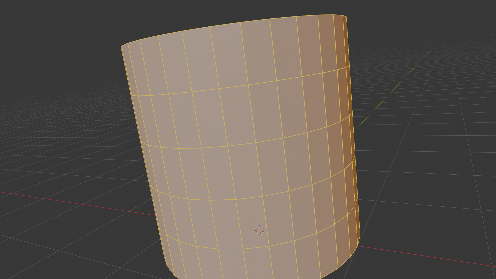
🎯 Why add loop cuts? Think of it like this: Imagine trying to sculpt a detailed face from a smooth ball of clay. You need to add clay (or in our case, geometry) where you need detail. These loop cuts give us control points we can use to shape our mug. Without them, we'd have very limited control over the form.
Look at your cylinder now—it has several evenly-spaced rings around it. These rings will help us create the rim, the base, and any curves we want in the body of the mug.
Limited Control] --> B[Add Loop Cuts
More Geometry] B --> C[Better Control
Can Shape Details] style A fill:#f0f0f0,stroke:#333,stroke-width:2px style B fill:#fff59d,stroke:#333,stroke-width:2px style C fill:#a5d6a7,stroke:#333,stroke-width:2px,color:#000
Creating the Top Opening
Right now, our cylinder is solid—it has a top and bottom face. But a mug needs an opening at the top so you can actually pour coffee in! Let's fix that.
📝 Removing the Top Face
- Make sure you're in Edit Mode
- Switch to Face Select Mode: Press
3 - Deselect everything: Press
Alt+A - Rotate your view to see the top of the cylinder
- Click the top face to select it (it turns orange/blue)
- Delete it: Press
Xand choose "Faces"
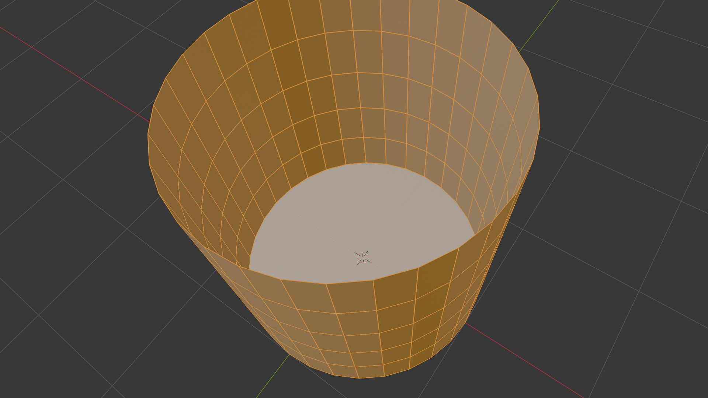
Perfect! Now you have an opening at the top. If you rotate your view and look down into the cylinder, you can see straight through to the bottom face. We're getting closer to having a real mug!
✅ Progress Check
At this point, you should have:
- A cylinder with good mug proportions (taller than it is wide)
- Four loop cuts running horizontally around it
- An opening at the top (no top face)
- A closed bottom (bottom face still there)
If something doesn't match, don't panic! You can always undo with Ctrl+Z and try again. That's the beauty of digital modeling—there's always an undo button!
Hollowing Out the Interior
Now comes one of the most satisfying parts—turning our solid cylinder into an actual hollow mug! This is where your object really starts to feel real. We're going to use a technique called "insetting" combined with extrusion to create the interior space.
Why We Need Interior Geometry
You might think: "Can't I just leave it hollow?" Well, technically yes, but it would look wrong in renders and be unusable for things like 3D printing. Real mugs have thickness to their walls—they're not infinitely thin. We need to model that thickness.
💡 The Paper Cup Analogy: Think about a paper cup. It's not just a hollow tube—it has actual wall thickness. If you look at the rim, you can see the thickness of the paper. That's what we're creating here. Without it, your mug would look like it's made of impossibly thin material, like a soap bubble!
Creating the Interior Wall
We're going to create the inside of the mug by "insetting" the top edge ring and then extruding it downward. This might sound complicated, but watch how elegant it is:
📝 Step-by-Step: Insetting the Top
- Make sure you're in Edit Mode with your cylinder selected
- Switch to Face Select Mode: Press
3 - Deselect everything: Press
Alt+A - Select the top edge loop:
- Hold
Altand click on any edge at the top opening - The entire top ring should select (if it doesn't, try clicking a different edge)
- Hold
- Activate Inset: Press
I(for Inset) - Move your mouse inward: The edge ring will scale toward the center
- Type
0.1and press Enter: This creates a nice rim thickness

Look at what you've created! Now there's a ring at the top that represents the rim of your mug. That's the thickness you'd feel if you put your lips on the mug. Cool, right?
💡 Understanding the Inset Tool
The Inset tool (I) is incredibly useful. It creates a new edge loop inside your selection and scales it. Think of it like drawing a smaller rectangle inside a bigger one—that's essentially what it's doing with your edges. You'll use this tool constantly for:
- Creating rim thickness (like we just did)
- Adding detail to flat surfaces
- Creating beveled edges
- Making decorative patterns
Extruding Downward to Create the Interior
Now we have the rim, but we need to create the actual inside surface of the mug. We'll do this by extruding the inner edge ring downward.
📝 Creating the Interior Surface
- The inner edge ring should still be selected (if not, Alt+click it)
- Activate Extrude: Press
E - Immediately press
Z: This constrains movement to only the Z-axis (up/down) - Move your mouse downward: You'll see the new geometry being created
- Move it almost to the bottom: Leave a small gap at the bottom (don't go all the way down)
- Click to confirm when it looks good

🎯 Pro Tip: Don't extrude all the way to the bottom face! Leave a small gap. Why? Because if you extrude all the way down, you'll have overlapping geometry which can cause problems with rendering and modeling later. Plus, real mugs often have a slightly raised interior bottom—it looks more realistic this way.
Capping the Interior Bottom
Right now, if you look inside your mug (rotate your view to peek inside), you can see that the interior has an opening at the bottom. We need to close that off so your mug can actually hold (virtual) coffee!
📝 Closing the Interior Bottom
- The bottom interior edge loop should still be selected
- Press
F: This creates a face that fills the hole - Switch to Edit Mode and look inside: You should now see a complete interior surface
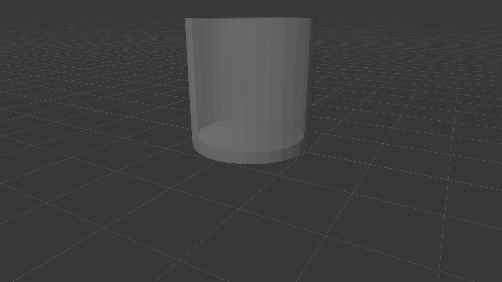
✅ What You've Accomplished
Take a moment to appreciate what you've done! Your cylinder now has:
- An outer surface (the outside of the mug)
- An inner surface (the inside where coffee would go)
- Wall thickness (the space between inner and outer surfaces)
- A rim at the top (with proper thickness)
- A closed bottom (both exterior and interior)
This is real 3D modeling! You've created something that has actual structure and volume, not just a hollow shell.
Optional: Rounding the Interior Bottom
If you want to make your mug look even more realistic, you can round out the interior bottom. Real mugs rarely have perfectly flat interior bottoms—they usually have a gentle curve. Here's how to add that detail:
📝 Optional: Rounding the Interior Bottom
- Switch to Face Select Mode: Press
3 - Select the interior bottom face (the one you just created with F)
- Activate Inset: Press
I - Type
0.3and press Enter: This creates a smaller face inside - With this inner face still selected, press
Efor extrude - Press
Zto constrain to vertical - Move slightly upward (type
0.1) and press Enter
This creates a subtle curved transition at the bottom of the interior. It's a small detail, but these little touches are what separate good models from great ones!
Checking Your Work: The "Look Inside" Test
Before moving on, let's make sure everything looks right. Here's a quick way to check your hollow interior:
🔍 Visual Inspection Checklist
- Rotate your view to look down into the mug from above
- Check that you can see the interior bottom
- Look at the rim from an angle—you should see thickness
- Toggle X-Ray mode (
Alt+Z) to see through the model and verify the interior geometry - Turn off X-Ray mode when done (
Alt+Zagain)
If everything looks good, congratulations! You've just completed one of the most fundamental operations in 3D modeling—creating a hollow object with proper thickness. This technique applies to so many things: cups, bowls, vases, helmets, and countless other objects.
Adding the Handle
Now for the fun part—the handle! This is where your cylinder truly becomes a mug. The handle is also where we'll learn about extruding in curves and connecting separate pieces of geometry. It's a bit more challenging than what we've done so far, but I promise you can do this!
Understanding Handle Anatomy
Before we start clicking buttons, let's think about what a mug handle actually looks like:
🔍 Handle Structure
- Two connection points: The handle attaches to the mug at the top and bottom
- A curve: It arcs outward from the mug body
- Thickness: It's thick enough to be functional (you can grip it)
- Smooth transitions: Where it connects to the mug, it blends smoothly
- A hole in the middle: Space for your fingers to fit through
💡 The Bridge Analogy: Think of a handle like a bridge connecting two points on the mug. Just like a bridge, it needs to be strong enough (thick enough) to be functional, but elegant enough to look good. And just like a bridge engineer, we need to think about the connection points carefully!
Creating the Handle Base Points
We're going to create the handle by extruding from the mug body itself. This ensures a clean connection and makes the handle look like it's truly part of the mug, not just stuck on.
📝 Selecting Handle Attachment Points
- Make sure you're in Edit Mode
- Switch to Face Select Mode: Press
3 - Deselect everything: Press
Alt+A - Rotate your view to see the side of the mug
- Select two faces on the side where you want the handle:
- One face near the top (maybe 2-3 loop cuts down from the rim)
- One face near the bottom (but not at the very bottom)
- Hold
Shiftand click to select both
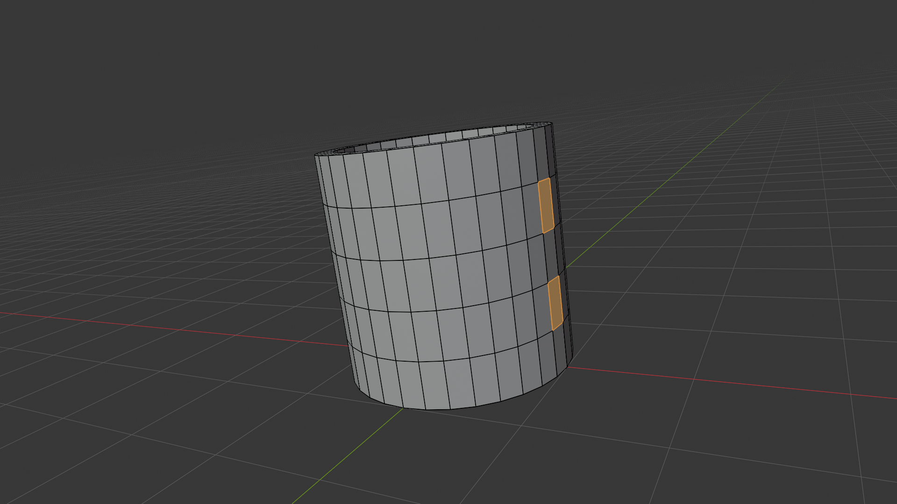
⚠️ Handle Placement Tips
Where you place your handle matters for realism:
- Not too high: If it starts too close to the rim, it looks awkward
- Not too low: If it starts too close to the base, it looks bottom-heavy
- Good spacing: The two attachment points should be roughly 60-70% of the mug's height apart
- Vertical alignment: Make sure both faces are roughly vertically aligned (one above the other)
Don't stress about perfection—you can always adjust later! Just get them reasonably positioned.
Extruding the Handle Bases
Now we'll extrude these faces outward to create the starting points of our handle. Think of this like pulling clay outward from the mug surface.
📝 Creating Handle Stubs
- With both faces selected, press
Efor Extrude - Move your mouse outward from the mug
- Don't move too far—just create small stubs (about 0.2-0.3 Blender units)
- Click to confirm
- Immediately press
Sfor Scale - Type
0.9and press Enter: This makes the stubs slightly smaller
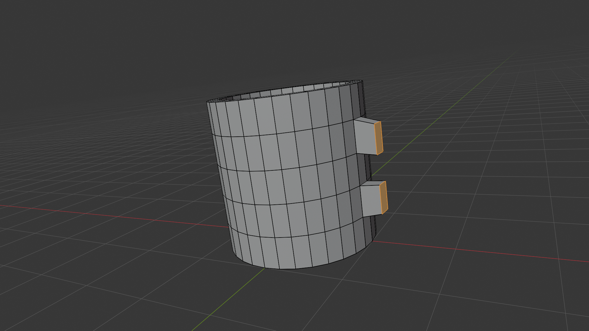
Good! Now you have two little protrusions from the side of your mug. These are the beginnings of your handle. They might look weird right now, but trust the process—they'll look much better once we connect them!
Building the Handle Arc
Now comes the really fun part—creating the curved arc of the handle. We'll do this by repeatedly extruding and rotating, building up the curve gradually.
📝 Creating the Handle Curve (Top Part)
- Select only the top stub's outer face (deselect everything first with
Alt+A, then click the outer face) - Press
Eto extrude - Move outward and upward a bit (just move your mouse, don't constrain)
- Click to confirm
- Press
Rfor Rotate - Press
Yto rotate around the Y-axis - Type
15and press Enter: This angles it outward - Repeat this process 2-3 more times: Extrude (E) → Move → Rotate (R, Y) → Small angle
🎨 The Sculpture Approach: Creating a curved handle is like sculpting a ribbon from clay. You don't try to bend the whole thing at once—instead, you build it up in small sections, each one angled slightly more than the last. That's exactly what we're doing here with the extrude-rotate-repeat pattern.
📝 Creating the Handle Curve (Bottom Part)
- Now select the last segment you created (the outer face of your arc)
- Continue extruding downward and inward:
- Press
E, move toward the bottom stub - Press
R,Y, type-15(negative to curve back)
- Press
- Repeat this 2-3 times until you're close to the bottom stub
- For the final extrusion: Aim it directly at the bottom stub's outer face
![4-panel composite showing the handle arc being built segment by segment from the upper stub. Panel 1: first segment extruded outward from the upper stub and rotated 30° at the new-vert median. Panel 2: second segment continues the arc with another 30° rotation. Panel 3: third segment continues the arc with another 30° rotation. Panel 4: fourth segment brings the arc nearly to vertical at 120° total rotation. Each panel shows the active tip face selected in orange after the segment's extrude-translate-rotate operation. Front perspective view consistent across all four panels.](images/lesson_07_10_handle_arc_progression.png)
Connecting the Handle
Now you have a curved arc that should be close to your bottom stub, but they're not connected yet. We need to bridge these two pieces of geometry to complete the handle.
📝 Bridging the Gap
- Switch to Edge Select Mode: Press
2 - Select the outer edge of your handle's last segment
- Hold
Shiftand select the outer edge of the bottom stub - Press
F: Blender will try to connect them with a face - If it doesn't look right, try using the Bridge tool instead:
- With both edges still selected
- Right-click and choose "Bridge Edge Loops"
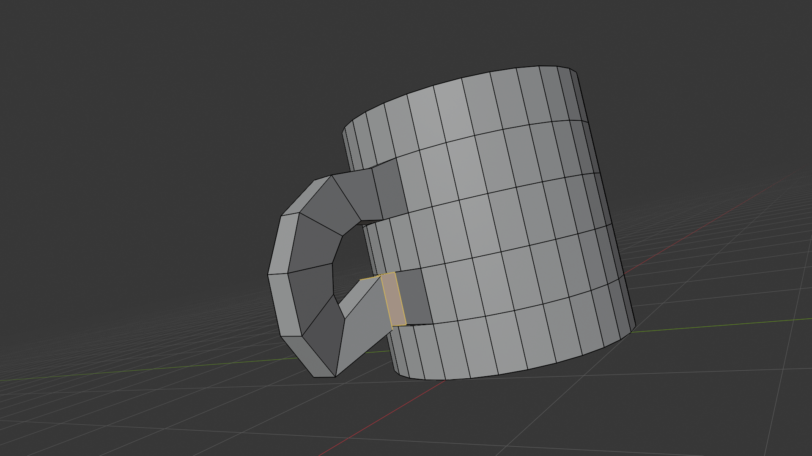
⚠️ Common Handle Issues
If your handle looks twisted or weird:
- Don't panic! This happens to everyone
- Try selecting problem edges and rotating them with
R - You can also select individual vertices (press
1) and move them withG - Remember:
Ctrl+Zis your friend—you can always undo and try again
If the handle is too thick or thin:
- Select all the handle faces
- Press
Sto scale - Press
Shift+Zto scale only in X and Y (not height) - Move mouse to adjust thickness
Smoothing the Handle Shape
Your handle probably looks a bit angular and blocky right now—that's normal! We can smooth it out in two ways:
📝 Option 1: Subdivision Surface (Recommended)
- Switch back to Object Mode: Press
Tab - In the properties panel (right side), find the Modifier Properties (wrench icon)
- Click "Add Modifier" → Generate → Subdivision Surface
- Your mug (including handle) will become smoother!
- Adjust the viewport level if needed (usually 1 or 2 is good)
📝 Option 2: Manual Smoothing (For Learning)
- Stay in Edit Mode
- Select all handle edges (you can box select with
B) - Right-click and choose "Subdivide"
- In the popup that appears, increase "Number of Cuts" to 2-3
- This adds more geometry, making the curve smoother
💡 Pro Insight: The Subdivision Surface modifier is one of the most powerful tools in 3D modeling. It automatically smooths your geometry by adding virtual subdivisions. Think of it like AI smoothing for your model—it takes your angular shape and makes it curvy without you having to manually add tons of vertices. Most professional models use this modifier!
on Mug Side] --> B[Extrude Outward
Create Stubs] B --> C[Extrude + Rotate
Build Top Arc] C --> D[Extrude + Rotate
Build Bottom Arc] D --> E[Bridge Edges
Connect Handle] E --> F[Add Subdivision
Smooth Result] style A fill:#f0f0f0,stroke:#333,stroke-width:2px style F fill:#4CAF50,stroke:#333,stroke-width:2px,color:#fff
✅ Handle Complete!
Take a moment to celebrate! You've just created a curved handle using extrusion, rotation, and bridging. This is the same technique used to create:
- Character arms and legs
- Cables and wires
- Pipes and tubes
- Tree branches
- Vehicle parts
You've learned a technique that applies to hundreds of different modeling scenarios!
![3-panel composite showing the completed coffee mug with bridged handle from three orthographic views. Panel 1: right orthographic side profile showing the classic mug-and-handle silhouette with the handle arc curving smoothly from the top attachment to the bottom attachment. Panel 2: front orthographic view showing the handle protruding from the right side of the mug body with proper depth. Panel 3: top orthographic bird's-eye view showing the handle curvature and the two attachment points on the mug body.](images/lesson_07_12_complete_handle_multiview.png)
Refining the Shape
You now have a recognizable coffee mug! But it probably looks a bit rough around the edges (literally). This section is all about taking your good model and making it great through refinement and attention to detail.
The Art of Refinement
Refinement is where your model goes from "that's pretty good" to "wow, that looks professional!" It's the difference between a rough sketch and a finished drawing. The good news? Most of the work is already done—we're just polishing now.
🎨 The 80/20 Rule: In 3D modeling, you spend about 20% of your time creating the basic shape and 80% refining it. That might sound discouraging, but here's the secret: refinement is actually more fun because you can see your model getting better with each adjustment. It's like watching a sculptor polish a statue—the transformation is satisfying!
Checking Overall Proportions
Before we dive into small details, let's step back and look at the big picture. Sometimes when you're working close-up on a model, you lose sight of the overall proportions.
🔍 Proportions Checklist
- Switch to Object Mode (press
Tabif you're in Edit Mode) - Zoom out (scroll mouse wheel) to see the whole mug
- Look at these aspects:
- Is the mug roughly 1.2-1.5 times taller than it is wide?
- Is the handle big enough for fingers but not oversized?
- Does the rim look like a reasonable thickness?
- Is the bottom stable (not too narrow)?
- If something looks off, we can still adjust it!
💡 The "Squint and Compare" Technique
Here's a pro trick: Squint at your model (literally, squint your eyes). This blurs out the details and lets you focus on the overall form. Then, think about a real coffee mug. Do the proportions match? If not, what needs adjusting?
You can also rotate your mug next to the default cube (add one with Shift+A if you deleted it) to compare sizes. A typical coffee mug is about 1.5-2 cubes tall.
Adjusting the Mug Body Shape
Many real coffee mugs aren't perfectly cylindrical—they have a subtle taper (wider at the top) or curves that make them more visually interesting. Let's add some of that character to your mug.
📝 Adding a Subtle Taper
- Enter Edit Mode (press
Tab) - Switch to Edge Select Mode: Press
2 - Select the top edge loop (Alt+click on an edge near the rim)
- Press
Sfor Scale - Press
Shift+Z: This scales only in X and Y, not Z (height) - Move your mouse outward slightly (or type
1.1) - Press Enter to confirm

See how that tiny change makes the mug look more dynamic? It's no longer a boring cylinder—it has a shape! This is what I mean by refinement: small changes that make a big visual difference.
Rounding the Rim
Real mug rims aren't sharp edges—they're slightly rounded. This both looks better and is more realistic (sharp edges are rare in the real world). We can add this detail using the Bevel tool.
📝 Beveling the Rim
- Make sure you're in Edit Mode
- Switch to Edge Select Mode: Press
2 - Select the outer top edge loop (Alt+click the rim edge)
- Press
Ctrl+Bto activate Bevel - Move your mouse slowly outward (you'll see the edge split into two)
- Keep the bevel small—just a subtle rounding
- Scroll mouse wheel up once to add one more segment (makes it rounder)
- Click to confirm

🎯 Understanding Bevels: Beveling is like rounding off a sharp corner. In the real world, almost nothing has perfectly sharp edges—they're always slightly rounded, even if just microscopically. Adding bevels to your 3D models makes them look more realistic because they catch light the way real objects do. Without bevels, models look artificially sharp and fake.
Refining the Handle Connection
Where the handle meets the mug body, you might notice some sharp angles or awkward geometry. Let's smooth those transitions to make the connection look natural, like the handle grew from the mug.
📝 Smoothing Handle Transitions
- Switch to Vertex Select Mode: Press
1 - Select the vertices where the handle meets the mug (use box select with
Bor Shift+click) - Enable Proportional Editing: Press
O(you'll see "Proportional Editing: On" at the bottom) - Press
Gto move a vertex slightly - Scroll mouse wheel to adjust the influence area (the circle shows how far the effect spreads)
- Move slightly to blend the connection smoothly
- Disable Proportional Editing when done: Press
Oagain
💡 Proportional Editing Explained
Proportional Editing is like having gravity affect nearby geometry. When you move one vertex, nearby vertices are pulled along smoothly. The closer they are, the more they're affected. It's perfect for:
- Smoothing transitions between parts
- Creating organic curves
- Adjusting areas without creating hard edges
- Blending connections smoothly
The mouse wheel controls the "falloff"—how far the influence spreads. Bigger circle = more vertices affected.

Adding a Base/Foot (Optional)
Many coffee mugs have a slightly raised bottom edge called a "foot." This small detail adds realism and helps the mug look more grounded. It's optional, but let's add it!
📝 Creating a Mug Foot
- Switch to Face Select Mode: Press
3 - Select the bottom face of the mug (rotate view to see it clearly)
- Press
Ifor Inset - Type
0.15and press Enter: Creates an inner ring - With the inner face still selected, press
Efor Extrude - Press
Zto constrain to vertical - Move down slightly (type
-0.05) and press Enter
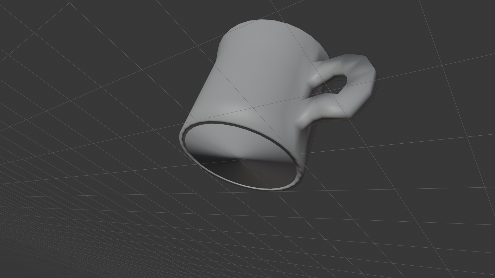
Now your mug has a raised outer edge on the bottom, just like many real mugs! This small detail makes it look more professional.
Final Shape Assessment
Let's take one more look at the overall shape before moving to the final details.
✅ Refinement Milestone
Your mug should now have:
- Good overall proportions (height vs width)
- A subtle taper (wider at top) for visual interest
- Rounded rim edges (beveled)
- Smooth handle-to-body transitions
- Optional base foot for realism
- No sharp, unrealistic edges
These refinements transform your basic cylinder into a believable, professional-looking object!
Final Details and Polish
We're in the home stretch! Your mug looks good, but let's add those finishing touches that separate amateur work from professional results. This is where attention to detail really pays off.
The Power of Small Details
In 3D modeling, it's often the tiniest details that make the biggest difference. Think about the difference between a movie set and a real building—up close, you can tell the difference because of small details like wear, texture variations, and imperfections.
💡 The Restaurant Analogy: Imagine two restaurants serving the same burger. One just slaps it on a plate. The other adds a garnish, wipes the plate edge, and arranges everything thoughtfully. They're both burgers, but one feels more professional. That's what final details do for your 3D model!
Smooth Shading vs. Flat Shading
Right now, your mug might look a bit faceted—you can see the individual faces that make up the cylinder. We can fix this instantly with smooth shading.
📝 Applying Smooth Shading
- Make sure you're in Object Mode (press
Tabif needed) - Right-click on your mug
- Select "Shade Smooth" from the context menu
- Watch your mug transform! It now looks much smoother
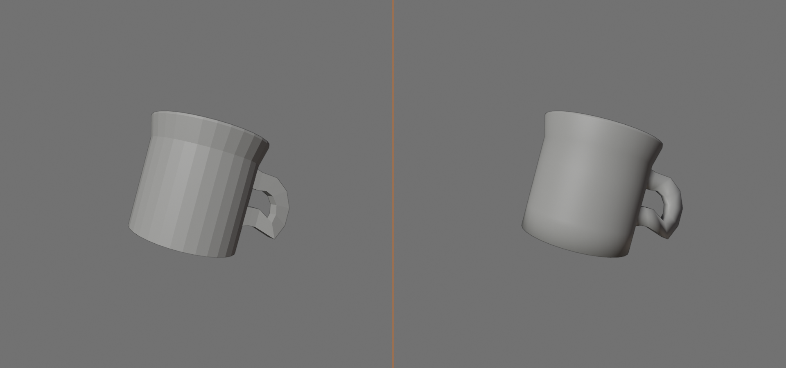
That's it! Your angular cylinder now looks like a smooth, rounded mug. But you might notice some weird shading artifacts, especially where the handle meets the body. Don't worry—that's normal, and we can fix it.
⚠️ Understanding Smooth Shading Artifacts
Smooth shading works by averaging the angles of adjacent faces. Sometimes this creates weird shadows or gradients in places you don't want. Common issues:
- Dark spots at handle connections: Because of extreme angle differences
- Wavy-looking surfaces: When geometry is too sparse
- Strange gradients: At sharp corners that should stay sharp
We'll fix these with Auto Smooth and edge marking!
Auto Smooth for Better Results
Auto Smooth is like telling Blender: "Use smooth shading, but keep sharp edges sharp." It's the best of both worlds.
📝 Enabling Auto Smooth
- Select your mug in Object Mode
- Right-click the mug and choose Shade Auto Smooth (or use Object · Shade Auto Smooth)
- Open the Modifier Properties tab (the blue wrench icon)
- Find the "Smooth by Angle" modifier that was just added
- Set the Angle to 30 degrees (or adjust if needed)
- Faces meeting below that angle are smoothed, sharper edges stay crisp
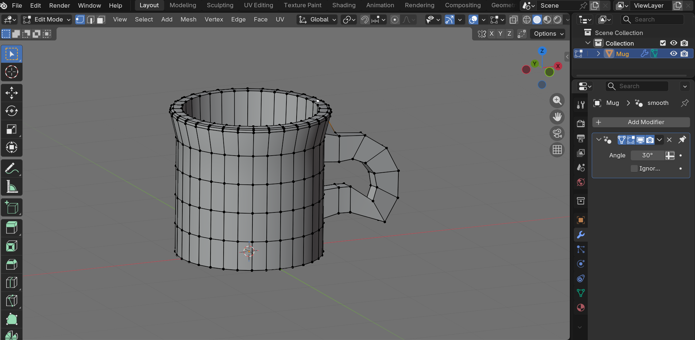
Now your mug should look even better! Auto Smooth preserves intentional hard edges while smoothing everything else. This is one of those "set it and forget it" features that makes your models look professional with minimal effort.
Marking Sharp Edges (Advanced)
If you still see shading issues at specific edges (like where the handle connects), you can manually mark edges as "sharp" to force them to stay crisp.
📝 Marking Sharp Edges
- Enter Edit Mode
- Switch to Edge Select Mode: Press
2 - Select the problematic edge(s) (Shift+click to select multiple)
- Press
Ctrl+Eto bring up the Edge menu - Choose "Mark Sharp"
- The edge will now stay sharp even with smooth shading
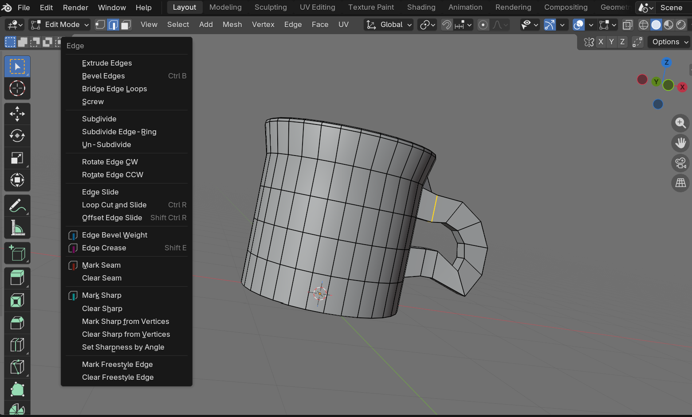
This is especially useful at the base of the handle where it meets the mug body. Marking those connection edges as sharp can eliminate weird shading artifacts.
Adding Thickness with Solidify (Alternative Method)
If you want to experiment with an alternative way to add wall thickness, Blender has a modifier called Solidify. This is especially useful if you started with a simple hollow shell.
📝 Using the Solidify Modifier (Optional)
- Select your mug in Object Mode
- Go to Modifier Properties (wrench icon on right panel)
- Click "Add Modifier" → Generate → Solidify
- Adjust thickness value: Start with 0.02-0.04
- Check "Even Thickness" for better results
- Adjust "Offset" if needed (-1 to 1, affects which side gets thickness)
💡 When to Use Solidify: The Solidify modifier is great when you've modeled only an outer surface and want to automatically add interior walls. Since we manually created our interior, we don't strictly need it. But it's good to know about for future projects like modeling thin objects (paper, leaves, clothing, etc.).
Final Geometry Cleanup
Before we call our mug complete, let's do a quick cleanup to remove any potential issues that might cause problems later (in rendering, animation, or 3D printing).
📝 Mesh Cleanup Checklist
- Enter Edit Mode
- Select all geometry: Press
A - Open the Mesh menu: At the top menu bar, click "Mesh"
- Choose "Clean Up" → "Merge by Distance"
- Check the bottom-left popup: It should say "Removed X vertices"
- If it removed too many, undo (
Ctrl+Z) and decrease the distance threshold
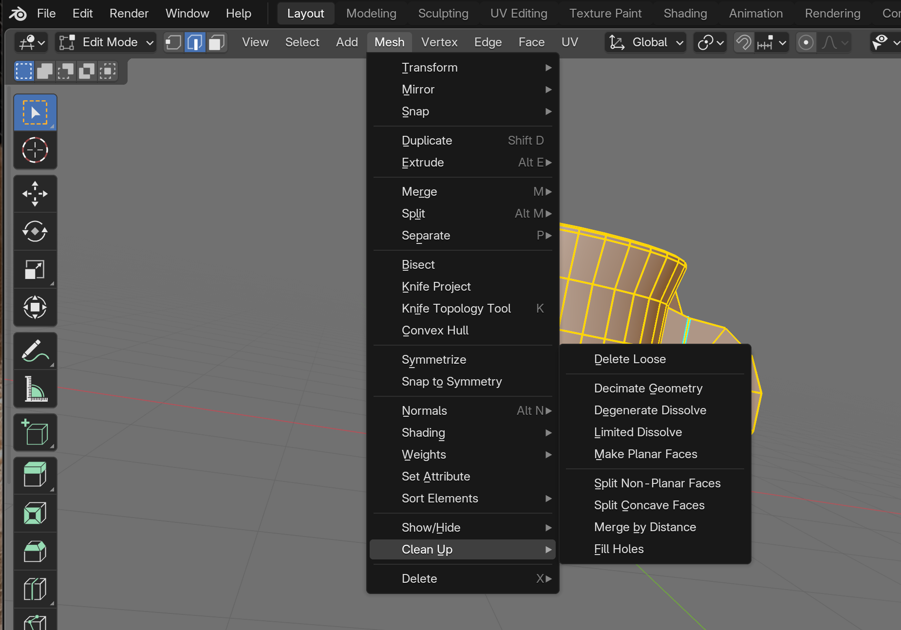
This cleanup operation finds vertices that are extremely close together (basically duplicates) and merges them into one. It's like decluttering your model's geometry—getting rid of redundant points that serve no purpose.
✅ Why Clean Geometry Matters
Clean geometry might seem like busywork, but it prevents:
- Rendering artifacts: Duplicate vertices can cause weird shadows or light leaks
- Animation issues: Double vertices can create gaps when deforming
- File size bloat: Why store duplicate data unnecessarily?
- Modifier problems: Some modifiers behave strangely with messy geometry
- 3D printing failures: Non-manifold geometry causes print errors
Professional 3D artists always clean their geometry before considering a model "done."
Checking for Non-Manifold Geometry
This sounds technical, but it's simple: "manifold" means your model is watertight and properly connected. Non-manifold geometry has holes, internal faces, or other issues that make the model invalid for certain uses (like 3D printing).
📝 Checking for Issues
- In Edit Mode, deselect all: Press
Alt+A - Open the Select menu at the top
- Choose "Select All by Trait" → "Non-Manifold"
- If nothing selects: Great! Your geometry is clean
- If something selects: You might have duplicate vertices or holes that need fixing
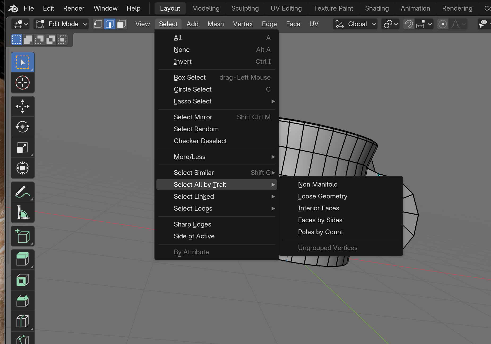
On your first beginner mug it's normal to find some non-manifold edges left from the inset, extrude, and bridge steps · review and clean them up before treating the model as production-ready. It's a good habit to check on any model you build.
Origin Point Adjustment
The origin point is the little orange dot that represents your object's center. It's where the object will rotate and scale from. Let's make sure it's in a sensible location.
📝 Setting Origin to Bottom Center
- Switch to Object Mode
- Place your 3D cursor at the bottom center of the mug:
- Enter Edit Mode
- Switch to Vertex Select Mode (
1) - Select the bottom center vertex
- Press
Shift+S→ "Cursor to Selected" - Return to Object Mode
- Right-click your mug
- Choose "Set Origin" → "Origin to 3D Cursor"
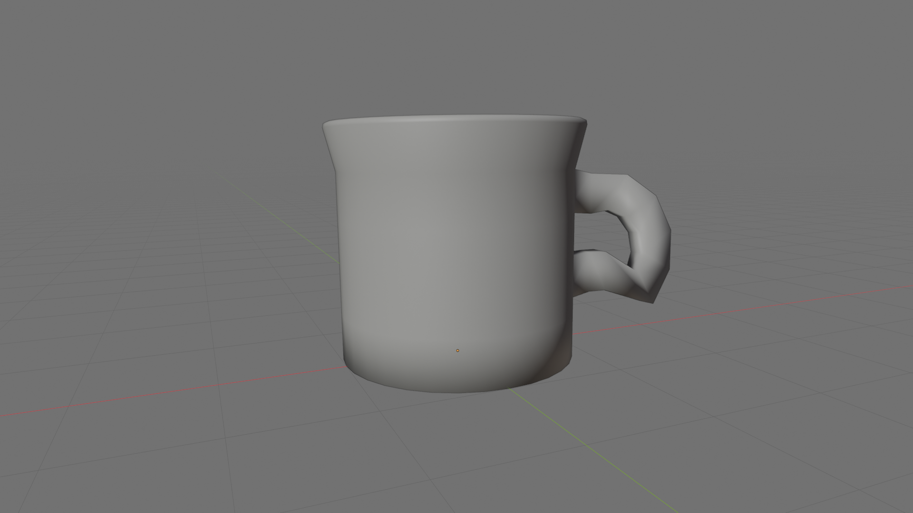
Now your origin point is at the bottom center of the mug, which makes sense—that's where a real mug sits on a table! This makes it easier to place the mug on surfaces later.
if needed] C --> D[Clean Geometry
Merge by Distance] D --> E[Check Non-Manifold] E --> F[Adjust Origin Point] F --> G[Model Complete!] style A fill:#f0f0f0,stroke:#333,stroke-width:2px style G fill:#4CAF50,stroke:#333,stroke-width:2px,color:#fff
Taking a Victory Screenshot
Before we move on, take a moment to appreciate what you've created! Let's set up a nice view for a screenshot.
📝 Getting a Good View
- Press
Numpad 7for top view (or View menu → Viewpoint → Top) - Then press
Numpad 1for front view - Rotate to an angle you like (middle-mouse drag)
- Press
Zand choose a viewport shading mode:- "Solid" for clean geometry view
- "Material Preview" for a more realistic look
- Take a screenshot! (PrtScn on Windows, or Shift+Cmd+3 on Mac)
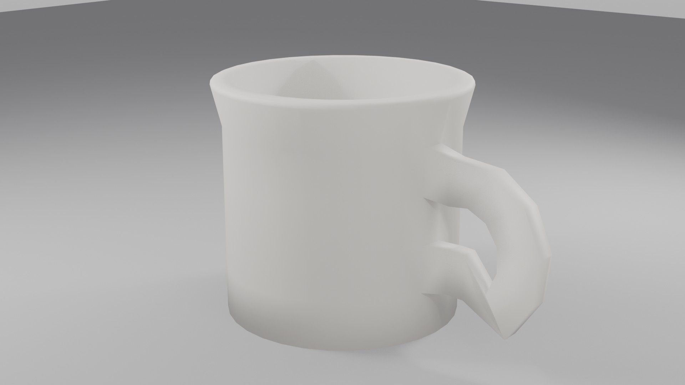
Congratulations! You've just completed your first 3D model from scratch. That's something to be proud of!
Good Modeling Practices
Now that you've completed your first model, let's talk about the habits and practices that will serve you well in every future project. These aren't just rules—they're wisdom learned from thousands of hours of 3D modeling experience.
The Professional Mindset
What separates hobbyist 3D artists from professionals isn't just skill—it's consistency and good habits. Professionals follow practices that make their work reliable, organized, and efficient.
🎯 The Carpenter's Workshop Analogy: Imagine two carpenters. One leaves tools scattered everywhere, never measures twice, and cuts first and thinks later. The other keeps tools organized, plans each cut, and cleans up as they go. Both might finish the project, but one will do it faster, with better results, and with less stress. That's what good modeling practices do for you!
Organization and Naming
A simple but often overlooked practice: name your objects meaningfully. When you have 50 objects in a scene, "Cylinder.001" won't help you find what you need!
📝 Naming Your Model
- Select your mug in Object Mode
- Press
F2(or double-click the name in the Outliner) - Type a descriptive name: "CoffeeMug" or "Mug_Ceramic_01"
- Press Enter to confirm
✅ Naming Conventions That Work
Professional studios often use naming conventions like these:
- Descriptive + Type: "CoffeeMug_Mesh", "Handle_Curve"
- Category prefixes: "PROP_Mug", "CHAR_Hero", "ENV_Table"
- Version numbers: "Mug_v01", "Mug_v02_final"
- LOD indicators: "Mug_High", "Mug_Low" (Level of Detail)
Pick a system that makes sense to you and stick with it!
The Save Early, Save Often Rule
This might seem obvious, but you'd be surprised how many people lose hours of work because they forgot to save. Don't be that person!
💾 Saving Best Practices
| Practice | Why It Matters | How to Do It |
|---|---|---|
| Save immediately | Establishes file location early | Ctrl+S right after starting |
| Save after each major step | You can always go back if something breaks | Ctrl+S after completing sections |
| Use incremental saves | Keep previous versions as backup | Shift+Ctrl+S → "Save As" with version number |
| Enable Auto Save | Insurance against crashes or mistakes | Edit → Preferences → Save & Load → Auto Save |
⚠️ The "Save As" Safety Net
Before making major changes to your model, use "Save As" (Shift+Ctrl+S) to create a new version. Name it something like "Mug_v02" or "Mug_beforeChanges". This way, if your experiment goes wrong, you haven't lost your good version!
Hard drive space is cheap. Your time isn't. Save multiple versions!
Working Non-Destructively
Non-destructive workflow means keeping your options open. Don't permanently delete or merge things unless you're absolutely sure you won't need them later.
🛡️ Non-Destructive Techniques
- Use Modifiers instead of applying changes directly: Modifiers can be turned off or adjusted later
- Hide objects instead of deleting them: Press
Hto hide,Alt+Hto unhide all - Use collections to organize: Group related objects together without merging them
- Keep backups before applying modifiers: Duplicate (
Shift+D) before applying - Use layers/collections for iteration: Keep different versions in different collections
💡 The Photo Editor Analogy: In photo editing, good editors work with layers and adjustment layers—never directly destroying the original pixels. They can always go back and tweak things. The same principle applies to 3D modeling. Keep your workflow flexible so you can make changes without starting over.
Reference and Scale Consistency
One common mistake beginners make is creating objects without considering real-world scale. Your mug might look great on its own, but when you add it to a scene with a character, it's either tiny as a thimble or huge as a bucket!
📏 Working with Scale
- Decide on a unit system early: Blender units can represent meters, centimeters, or inches
- Use the default cube as reference: It's 2 Blender units (2 meters by default)
- Research real-world dimensions: A coffee mug is typically 8-10cm diameter, 10-12cm tall
- Keep scale at 1.0 when possible: Check in Object Properties panel
- Apply scale if needed:
Ctrl+A→ Scale (converts visual scale to actual geometry)

✅ Quick Scale Check
To verify your mug is reasonably sized:
- Add a UV Sphere (
Shift+A→ Mesh → UV Sphere) - This sphere represents roughly a human head
- Your mug should be about 1/4 to 1/3 the size of the sphere
- If the mug is way too big or small, scale it appropriately
- Delete the test sphere when done
Clean Topology Matters
"Topology" refers to how your edges and vertices flow across your model. Good topology makes models easier to animate, texture, and modify later. Poor topology causes headaches.
🔍 Signs of Good Topology
- Mostly quads (4-sided faces): Easier to subdivide and animate
- Even edge spacing: No super-long edges next to super-short ones
- Edge loops follow form: Edges should flow around curves naturally
- No odd triangles or n-gons in critical areas: Especially where deformation happens
- Logical edge flow: Edges should make sense when you look at them
Name Everything] C[Save Strategy
Often + Versions] D[Non-Destructive
Keep Options Open] E[Scale Consistency
Real-world Size] F[Clean Topology
Even Edge Flow] G[Professional Results] A --> B A --> C A --> D A --> E A --> F B --> G C --> G D --> G E --> G F --> G classDef primary fill:#667eea,stroke:#333,stroke-width:2px,color:#fff; classDef success fill:#4CAF50,stroke:#333,stroke-width:2px,color:#fff; class A primary; class G success;
Learning from Each Model
Every model you create teaches you something. Professional 3D artists often keep notes about what worked, what didn't, and what they'd do differently next time.
📝 Post-Project Reflection Questions
- What technique was most useful in this project?
- What gave me the most trouble?
- If I modeled this again, what would I do differently?
- What shortcuts or tools did I discover?
- What do I want to learn for my next project?
Take a moment right now to think about these questions for your coffee mug. What was challenging? What felt good? These insights will help you improve faster than just jumping to the next project.
Building Your Personal Library
As you create more models, start building a personal asset library. That coffee mug you just made? Save it somewhere organized. You might need a mug for a kitchen scene in six months!
✅ Organizing Your Assets
Consider creating a folder structure like:
📁 Blender_Assets/
📁 Props/
📁 Kitchen/
📄 CoffeeMug_v01.blend
📄 Plate_v01.blend
📁 Furniture/
📄 Chair_v01.blend
📁 Characters/
📁 Environments/
📁 Materials/
Future-you will thank present-you for this organization!
Your Project: Complete the Mug
Alright, you've learned all the techniques—now it's time to put them all together! This project will solidify everything you've learned and give you a finished piece you can be proud of.
Project Overview
Your mission, should you choose to accept it (and you should!), is to create a complete, polished coffee mug following all the steps we've covered. But here's the twist: I want you to make it your own.
🎯 Project Goals
- Primary Goal: Create a complete coffee mug from cylinder to finished model
- Secondary Goal: Add one personal touch that makes it uniquely yours
- Learning Goal: Practice the complete modeling workflow independently
- Bonus Goal: Experiment with variations (tall, short, wide, narrow, etc.)
⏱️ Estimated Time: 45-60 minutes
Step-by-Step Project Checklist
Follow this checklist to ensure you don't miss any important steps. Check off each item as you complete it!
✅ Phase 1: Basic Form (15 minutes)
- ☐ Start with a fresh Blender file
- ☐ Delete the default cube
- ☐ Add a cylinder at world origin
- ☐ Scale to appropriate mug proportions (taller than wide)
- ☐ Add 4-5 horizontal loop cuts
- ☐ Remove the top face to create opening
- ☐ Save your file as "CoffeeMug_Project_v01.blend"
✅ Phase 2: Interior and Walls (15 minutes)
- ☐ Select the top edge loop
- ☐ Inset to create rim thickness (around 0.1)
- ☐ Extrude interior downward (leave gap at bottom)
- ☐ Close the interior bottom with F key
- ☐ Optional: Round the interior bottom with inset + extrude
- ☐ Check that walls have visible thickness
- ☐ Save progress (Ctrl+S)
✅ Phase 3: Handle Creation (20 minutes)
- ☐ Select two faces on mug side (top and bottom connection points)
- ☐ Extrude outward to create stubs
- ☐ Scale stubs slightly smaller
- ☐ Extrude and rotate to build top arc (3-4 segments)
- ☐ Extrude and rotate to build bottom arc (3-4 segments)
- ☐ Bridge the final gap between arc and bottom stub
- ☐ Check handle from multiple angles
- ☐ Save progress (Ctrl+S)
✅ Phase 4: Refinement (10 minutes)
- ☐ Add subtle taper to mug body (scale top slightly larger)
- ☐ Bevel the rim edge for rounded appearance
- ☐ Smooth handle connections with proportional editing
- ☐ Optional: Add base foot with inset + extrude on bottom
- ☐ Clean geometry (Mesh → Clean Up → Merge by Distance)
- ☐ Check for non-manifold geometry
- ☐ Save progress (Ctrl+S)
✅ Phase 5: Final Polish (5-10 minutes)
- ☐ Apply smooth shading (Right-click → Shade Smooth)
- ☐ Enable Auto Smooth in Object Data Properties
- ☐ Mark sharp edges if needed (Ctrl+E → Mark Sharp)
- ☐ Set origin to bottom center of mug
- ☐ Rename object to "CoffeeMug" or similar
- ☐ Final save (Ctrl+S)
- ☐ Take a screenshot of your finished mug!
Making It Your Own: Customization Ideas
Don't just copy exactly what we did in the lesson—add your own creative twist! Here are some ideas to make your mug unique:
🎨 Simple Customizations (Pick 1-2)
| Customization | How to Do It | Difficulty |
|---|---|---|
| Tall latte mug | Scale Z-axis more (1.5-2x taller) | ⭐ Easy |
| Short espresso cup | Make shorter and wider proportion | ⭐ Easy |
| Curved body | Use proportional editing to curve sides | ⭐⭐ Medium |
| Decorative rim | Add extra loop cuts and scale for patterns | ⭐⭐ Medium |
| Fancy handle shape | More segments in handle, creative curves | ⭐⭐ Medium |
| Saucer underneath | Add cylinder, scale flat, adjust proportions | ⭐⭐⭐ Advanced |
💡 Creative Encouragement: The best way to learn 3D modeling is by experimenting! Don't be afraid to try something and fail. Every "mistake" teaches you something valuable about how Blender works. If something goes wrong, just undo (Ctrl+Z) and try a different approach.

Troubleshooting Common Issues
Stuck on something? Here are solutions to the most common problems students encounter with this project:
⚠️ "My handle looks twisted or weird!"
Solution:
- Switch to Edit Mode and rotate your view to see the handle from different angles
- Select vertices that look out of place and rotate them (R key)
- Use proportional editing (O key) to smooth transitions
- If it's really messed up, delete the handle (select all handle faces, press X → Faces) and start over—it's faster than trying to fix a badly twisted handle
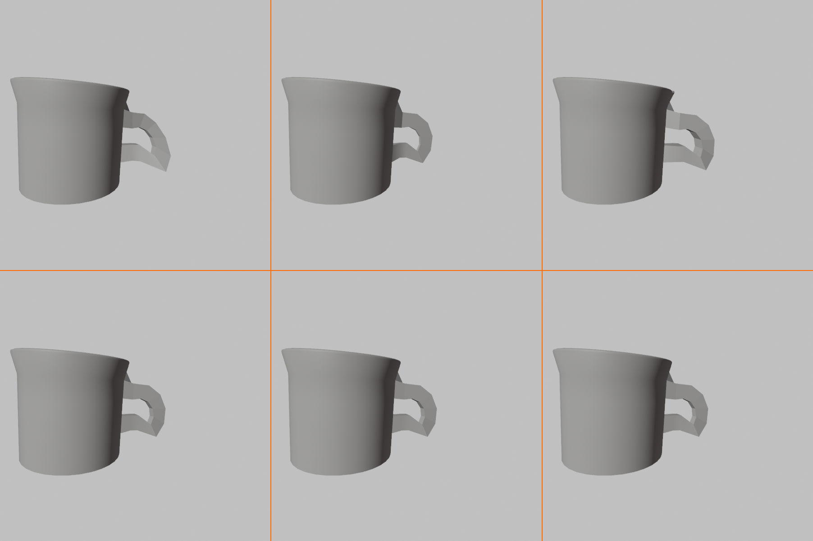
⚠️ "The smooth shading looks weird/blotchy!"
Solution:
- Enable Auto Smooth in Object Data Properties → Normals
- Mark problematic edges as sharp (Ctrl+E → Mark Sharp)
- Try adjusting the Auto Smooth angle (30-60 degrees usually works)
- Make sure you've merged duplicate vertices (Mesh → Clean Up → Merge by Distance)
⚠️ "My handle won't connect to the bottom stub!"
Solution:
- Make sure both edges are selected (they should both be highlighted)
- Try the F key to fill between selected edges
- Or use Edge menu (Ctrl+E) → Bridge Edge Loops
- If nothing works, try extruding the handle closer to the stub first, then bridge
⚠️ "I can't select the edge loop properly!"
Solution:
- Make sure you're in Edge Select Mode (press 2)
- Hold Alt while clicking an edge (Alt+click)
- If Alt+click doesn't work, you might be on a Mac—try Option+click instead
- If still not working, manually select edges one by one holding Shift
Success Criteria
How do you know when your project is complete? Here's what a successful coffee mug project should have:
✅ Your Mug is Complete When It Has:
- Proper proportions: Looks like a realistic coffee mug (not too tall, not too short)
- Hollow interior: You can see inside the mug from the top
- Visible wall thickness: The rim shows thickness, not paper-thin edges
- Functional handle: Looks like you could actually hold it
- Smooth transitions: No harsh angles where handle meets body
- Clean geometry: No duplicate vertices or non-manifold issues
- Proper shading: Smooth where it should be smooth, sharp where it should be sharp
- Good scale: Roughly the size a real mug would be
- Personal touch: Something that makes it uniquely yours
Bonus Challenges
Finished the basic project and want more? Try these additional challenges to push your skills further:
🏆 Challenge 1: Create a Matching Set
Create three variations of your mug: small (espresso), medium (coffee), and large (latte). Use duplication (Shift+D) and scaling to create the set quickly.
Bonus: Arrange them in a pleasing composition and take a screenshot!
🏆 Challenge 2: Add a Saucer
Create a matching saucer (small plate) for your mug. Start with a cylinder, scale it flat, add an indent in the center for the mug to sit in.
Tip: Use the same techniques—inset, extrude, and smooth shading!
🏆 Challenge 3: Model a Travel Mug
Use the same techniques to create a travel mug with a lid! This will require you to think about additional parts and how they connect.
Hint: The lid is just another cylinder with some modifications!
🏆 Challenge 4: Extreme Variations
Create unusual mug designs:
- A square mug (start with a cube instead of cylinder)
- A mug with two handles
- A very tall, thin mug
- A wide, shallow bowl-like mug
Goal: Experiment with how proportions change the character of the object!
Sharing Your Work
You've created something! Don't let it just sit on your hard drive. Share it and get feedback.
📸 Getting a Good Render for Sharing
- Position your camera nicely: Numpad 0 for camera view
- Switch to Material Preview shading: Press Z → Material Preview
- Take a viewport screenshot: PrtScn or Shift+Cmd+3
- Or render it: Press F12 for a proper render (we'll learn more about rendering later!)
- Save the image: Image → Save As
Consider sharing your work on:
- Blender Artists Community (blenderartists.org) - Very beginner-friendly!
- r/blender on Reddit - Great for feedback and inspiration
- Your personal portfolio or social media - Document your learning journey!
🎉 Celebration Time: Seriously, take a moment to appreciate what you've accomplished. You started with nothing but a blank screen and a cylinder. Now you have a complete 3D model created entirely by you. That's huge! Many people talk about learning 3D but never actually create anything. You did it!
Lesson Summary and What's Next
Congratulations! You've completed one of the most important lessons in your Blender journey. Let's recap what you've accomplished and look ahead to where we're going next.
What You've Learned
This wasn't just about making a coffee mug—you learned fundamental skills that apply to every 3D modeling project. Let's review the major concepts:
🎓 Key Skills Mastered
- Complete Modeling Workflow: From primitive shape to finished, polished object
- Mesh Manipulation: Extrusion, insetting, scaling, rotating, and moving geometry
- Loop Cuts and Edge Loops: Adding and selecting geometry systematically
- Creating Hollow Objects: Interior surfaces and wall thickness
- Organic Curves: Building curved shapes through extrude-and-rotate patterns
- Bridging Geometry: Connecting separate pieces smoothly
- Refinement Techniques: Beveling, proportional editing, smooth shading
- Professional Practices: Organization, naming, saving, and cleanup
The Bigger Picture
These techniques aren't limited to mugs. You can now model:
🎨 What You Can Create Now
| Object Category | Examples | Techniques Used |
|---|---|---|
| Kitchen Items | Bowls, cups, plates, vases | Cylinder base, hollow interior, smooth curves |
| Furniture | Simple tables, stools, chairs | Extrusion, loop cuts, basic proportions |
| Props | Barrels, buckets, bottles | Cylinder manipulation, handle creation |
| Architecture | Simple buildings, towers | Extrusion patterns, loop cuts, scale |
| Organic Objects | Tree trunks, simple body parts | Curved extrusions, proportional editing |
💡 The Foundation Principle: Professional 3D artists don't have thousands of different techniques memorized. They have a solid foundation of core skills (which you just learned!) and apply them creatively to different challenges. A coffee mug, a bucket, and a tower all start the same way—with a cylinder and these core techniques.
Key Takeaways
✅ Remember These Core Principles
- Start Simple, Add Complexity: Always begin with basic shapes and gradually refine
- Think in Primitives: Complex objects are just combinations of simple shapes
- Edge Flow Matters: How your vertices connect affects everything later
- Iteration is Normal: Professionals adjust and refine constantly—it's not failure, it's process
- Good Habits Save Time: Naming, saving, and organizing might seem tedious but pays off hugely
- Learn by Doing: Reading about modeling doesn't teach you—creating things does
Common "Next Step" Questions
Students often have these questions after completing their first model. Let me address them:
❓ "Should I practice this same mug model multiple times?"
Answer: Yes, but with variations! Try making different sized mugs, different handle styles, or even different types of containers (bowls, glasses, etc.). Repetition with variation is the key to mastery. The second time through will be faster and better than the first—that's progress!
❓ "Can I add materials and colors to my mug now?"
Answer: You could, but we'll cover materials and texturing properly in upcoming lessons (Module 3). For now, focus on getting comfortable with modeling itself. Trying to learn everything at once leads to overwhelm. Trust the process!
❓ "My mug doesn't look as good as professional work. Is that normal?"
Answer: Absolutely normal! Professional 3D artists have thousands of hours of practice. Your first mug is supposed to look like a first mug! The question isn't "Is it perfect?" but "Did I learn something?" If yes, you succeeded. Your 10th mug will be better than your 1st. Your 100th will be better still. That's how it works!
❓ "What should I model next?"
Answer: Continue with the course! Lesson 8 introduces modifiers, which will supercharge your modeling abilities. But if you want extra practice, try modeling other cylindrical objects: a water bottle, a candle, a pen holder, or a simple vase. Stay with variations of what you know before jumping to completely new challenges.
Your Learning Path Forward
Here's where you're headed in the upcoming lessons:
First Model ✓] --> B[Lesson 8
Modifiers] B --> C[Lesson 9
Precision Modeling] C --> D[Module 3
Materials & Texturing] D --> E[Module 4
Lighting & Rendering] E --> F[Complex Projects] style A fill:#4CAF50,stroke:#333,stroke-width:2px,color:#fff style F fill:#667eea,stroke:#333,stroke-width:2px,color:#fff
🔮 Coming Up Next
Lesson 8: Modifiers Introduction
Modifiers are like "magic filters" that automatically change your geometry. Want to make your mug symmetric? There's a modifier for that. Want to smooth it without adding a million vertices manually? There's a modifier for that too! Modifiers will dramatically speed up your workflow.
What you'll learn:
- Array Modifier (duplicate objects automatically)
- Mirror Modifier (perfect symmetry)
- Subdivision Surface (smooth objects elegantly)
- Bevel Modifier (round edges automatically)
- And more!
Practice Recommendations
Before moving to the next lesson, I recommend spending some time with these practice exercises:
📚 Recommended Practice (Pick 2-3)
- Model three different sized mugs: Small, medium, large (15-20 mins each)
- Create a simple bowl: Use the same techniques but no handle (20 mins)
- Make a water bottle: Taller proportions, smaller opening (30 mins)
- Design a vase: Experiment with curves using proportional editing (30 mins)
- Build a simple bucket: With a wire handle across the top (40 mins)
- Create a pen holder: Cylinder with no handle, decorative rim (25 mins)
Goal: Not perfection, but comfort with the workflow. You should be able to create a basic cylindrical object without constantly referring back to instructions.
Troubleshooting Resources
Stuck on something after finishing this lesson? Here are the best resources for getting help:
🆘 Where to Get Help
- Blender Documentation: docs.blender.org - Official reference for every tool
- Blender Artists Forum: blenderartists.org - Friendly community, great for beginners
- r/blenderhelp on Reddit: Quick answers to specific questions
- Blender Stack Exchange: blender.stackexchange.com - Technical Q&A
- YouTube Tutorials: Search "Blender [specific technique]" for video explanations
Final Thoughts
You've crossed an important threshold today. You're no longer someone who wants to learn 3D modeling—you're someone who is learning 3D modeling. There's a big difference between those two things!
🎯 A Message for Your Future Self: Months from now, when you're creating complex models with ease, you might look back at this coffee mug lesson and smile at how simple it seems. But remember: this is where it all started. Every professional 3D artist has their "first model" story. This is yours. Be proud of it!
🎉 Congratulations!
You've completed Lesson 7: Modeling Your First Object!
You've taken the most important step in 3D modeling—actually creating something. Everything gets easier from here because you now understand the fundamental workflow. Keep building, keep experimenting, and most importantly, keep having fun!
Ready for the next challenge? Let's learn about Modifiers in Lesson 8!